Aktuelle Infos - ab dem Beginn meiner Aufzeichnungen im Jahr 2000 bis 31.12.2020
23.12.2020
Nachdem ich zum 01.11.2020 pensioniert wurde - Zeit endlich Zeit! - möchte ich in nächster Zeit (endlich) mal alle Objekte unter die Lupe nehmen, wo erforderlich aktualisieren, bei den Runensteinen die Listennummern aufnehmen, die Quellen-/Lizenzangaben hinzufügen usw. Außerdem werde ich in dem Zusammenhang Verlinkungen zu den entsprechenden Einträgen in der "Dänische Runendatenbank" und dem Portal "Fund og Fortidsminder" einfügen. Ich werde wohl am Besten der Reihe nach vorgehen und habe in "Jütland" auch schon einige Stationen aufbereitet.
Zum Runenstein von Lyngby habe ich außerdem über Infos (die auch schon wieder von 2012 stammen) eine Deutung der Inschrift von Michael Lerche Nielsen, Außerordentlicher Professor, Universität Kopenhagen, Institut für Nordische Studien und Linguistik, aufgenommen. Die Inschrift war bislang als "ungedeutet" mit den Runen "...(n)untr : a : aisku : sina" aufgeführt.
24.11.2020
Bei den u.a. Arbeiten an meiner Homepage fand ich Informationen zu den Schiffssetzungen am Strand von Dyndved. Dort wurde doch tatsächlich im Spätsommer 2019 das Schilf durch die Gemeinde Sønderborg entfernt und die Steinsetzungen freigelegt. Eine Dokumentation erfolgte auch durch Einsatz einer Drohne von den Archäologen vom Museum in Haderslev. Auf meine E-Mail Anfrage hin bekam ich diese "Luftfotos" plus eine 3D von dort umgehend übermittelt und darf sie erfreulicherweise auf meiner Homepage - unter Hinweis auf das Urheberrecht des Museum Sønderjylland in Haderslev - veröffentlichen. Alle Infos / Fotos habe ich auf der o.a. Seite zusammengestellt.
22.11.2020
Eine Korrektur nahezu aller einzelnen Objekte/Links in den Landesteil-Übersichten war notwendig, da sich ein Fehler eingeschlichen hatte, den ich erst heute entdeckte. Wenn man aus den Auflistungen (z.B. Jütland) ein Objekt in einem neuen Tab (Registerkarte) öffnete, wurde darauf rechts neben dem kleinen Dänemark Flagge/Wimpel anstatt der richtige Ortsname der eigentlichen Örtlichkeit meist fälschlicherweise "Hovslund" angezeigt. Dem lag wohl ein uralter Kopierfehler zu Grunde.
25.10.2020
Darauf wollte ich ja noch hinweisen: Anfang diesen Jahres kam eine 6-teilige Doku in ZDF Info mit dem Thema "Die Wikinger: Fakten und Legenden". Die einzelnen Folgen können über die ZDF Mediathek noch bis 20.02.2021 abgerufen werden - absolut empfehlenswert!:
Teil 1: Raubzug gegen Kloster Lindisfarne
Teil 2: Krieger im Schiffsgrab (Die beiden außergewöhnlichen Schiffsfunde in Salme auf der Insel Saaremaa in Estland)
Teil 3: Das Rätsel von Roskilde
Teil 4: Das Geheimnis der Skelette (Fund von 54 enthaupteten Skeletten in Südengland)
Teil 5: Das Grab der Königin (Schiffsgrab von Oseberg)
Teil 6: Schätze für die Ewigkeit
17.10.2020
Eine Kopie des großen Runensteins von Jelling (Harald Blauzahn) wurde 1933 durch Abformung hergestellt und in den Jahren 1943-45 vom Kunsthistoriker R. Broby-Johansen in den Farben schwarz, weiß, gelb, rot und blau ausgemalt. Er stand dann jahrelang im Garten des Nationalmuseums in Kopenhagen und wurde auf zahlreichen Ansichskarten wiedergegeben.
Nun fand ich heute auf der Homepage des Nationalmuseums Kopenhagen diesen Beitrag vom 12.10.2020 in dänischer Sprache. Demnach steht er seit ca. 1991 in einem Vorort s-w von Kopenhagen in 2650 Hvidovre, Hvidovrevej 355 (GPS Daten 55.625404 12.482481 - Foto in Google Maps vorhanden. Nach Aufruf links oben Bild anklicken. Erst dann taucht er auf. Über weiteren Klick wird er rechts große dargestellt). Aktuell wird er neu angemalt.
16.10.2020
Da in Google 2020 viele Orte mit deutlich verbesserter Qualität eingestellt wurden, habe ich etliche Ansichten aktualisiert (z.B. Schloss Jægerspris, Højstrup Mark u.a.) und werde nach und nach alle austauschen.
12.10.2020
Im Internet fand ich hier einen Hinweis, wonach die Schiffssetzung von Vejerslev aus zig riesigen Steinen im September 2020 vor Ort rekonstruiert wurde. Am 08.10.2020 war bereits die offizielle Einweihung. Hier ein erstes gutes Foto. Ein weiterer Bericht in dänischer Sprache mit Drohnenfotos findet sich aktuell hier. Ein Zeitungsbericht von "Jyllands Posten" ist hier verlinkt.
01.07.2020
Über diese Webseite finden sich tolle Informationen (in dänischer Sprache) zu Lejre. Aktuell ist dort seit dem 16.06.2020 die Sonderausstellung "Männergrab in der großen Königshalle - wer war er?" zu sehen.
01.07.2020
In Ergänzung zu meinem Eintrag vom 16.12.2018 - siehe unten - kann ich anfügen, dass seit Ende Juni 2020, nach bereits erfolgten Vorgrabungen in 2019, nun die eigentliche Ausgrabung des Gjellestad Schiffes in Norwegen stattfindet.
Informationen dazu finden sich über die Webseiten des Kulturhistorischen Museums Oslo hier.
Über diese Seite findet man eine tolle digitale Aufbereitung dieses Fundortes (In Englisch und Norwegisch).
07.07.2019
Am 16.07.2019 wird im Fernsehkanal "ZDF Info" um 22.30 Uhr der 44-minütige Beitrag "Das Geheimnis des Wikingergrabs - Aufgedeckt Rätsel der Geschichte" erneut ausgestrahlt - weitere Details siehe unten zu: "07.11.2018". Eine Wiederholung soll am 22.07.2019 folgen.
Weiterer interessanter Beitrag auf ZDF Info:
Die Karte der Wikinger / Vinland Map
Die "Vinland-Karte" ist ein gut gehütetes Dokument der Yale University in Connecticut. Die Karte ist auf das Jahr 1440 und somit 50 Jahre vor Kolumbus' Entdeckung von Nordamerika datiert. / 43 Minuten / 15.06.2019 / Video nur verfügbar bis 21.07.2019
30.05.2019
The Curmsun disk - Was ist das denn bitte? Bis die Tage hatte ich davon noch nie gehört. Aber schon seit Dezember 2014 gibt es dazu Informationen im Internet.
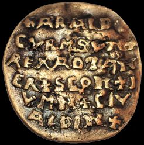
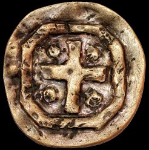
Fotos von der Webseite "http://www.thecurmsundisc.com", Lizenz CC-BY-SA 3.0Es handelt sich um eine kleine Goldplakette, mit einem Durchmesser von 4,5 cm und einem Gewicht von 25,23 Gramm. Sie hat einen Goldgehalt zwischen 83,3 % und 92,8 % mit Spuren von Silber, Kupfer, Eisen, Zink und Blei. Den metallurgischen Untersuchungen zufolge spricht diese Zusammensetzung für eine Herstellung im frühen Mittelalter. Eine Datierung zw. 960 und 986 n. Chr. liegt nahe.
Die Plakette wurde womöglich im Zusammenhang mit der Bestattung von König Harald I. "Blauzahn" Gormsson von Dänemark auf der Insel Wolin um 986 n. Chr. geprägt.
Sie tauchte offenbar 1841 beim Wiederaufbau der Kirche von Wiejkowo, ca. 7 km östlich von Wollin, im heutigen Polen auf (deutsch: Groß Weckow, in der Stadt- und Landgemeinde Wollin, im Camminer Kreis / Hinterpommern).
Sie fand sich mit einigen anderen Fundstücken, etlichen Münzen (eine davon aus der Zeit von Kaiser Otto I. von 973), zwei Schwertern und einigem "Silber- und Goldschrott" in einer Gruft der Kirche. Die Plakette wechselte danach mehrfach den Besitzer, bis sie 1946 in die Hände der polnischen Familie Sielski kam, deren Nachfahren seit 1986 im schwedischen Malmö leben. Während einer Schularbeit fand die damals 11-jährige Maja Sielski Bilder von antiken Münzen in Büchern und im Internet und erinnerte sich an das münzenartige Objekt in der Knopfsammlung ihrer Oma. Ihr Papa Tomasz kontaktierte danach den schwedischen Archäologen Sven Rosborn in Malmö um näheres über das Fundstück zu erfahren. Dieser hat einen 12-seitigen Artikel zur Thematik verfasst und geht im Ergebnis seiner Recherchen von der Echtheit der Plakette aus. Es gibt aber auch Forscher, die von einer Fälschung sprechen.
Die lateinische Inschrift lautet: +ARALD CVRMSVN+REX AD TANER+SCON+JVMN+CIV ALDIN+.
Übersetzt muss es wohl heißen: "Harald Gormsson, König der Dänen, der Schonen, der Jomsburg im Bistum Oldenburg".
Weitere Infos findet man unter: Webseite von Tomas Sielski / Artikel von Sven Rosborn / Artikel von Pontus Weman Tell / Wikipedia Artikel in Deutsch
05.03.2019 - Über die Internet Datenbank zu den dänischen Runensteinen (www.runer.ku.dk) fand ich erst heute einen bemerkenswerten Hinweis zu dem Bildstein von Hørdum. Offenbar wurden/werden auf allen Seiten nach und nach die entsprechenden Literaturhinweise eingepflegt.
Bereits 1993 berichtete demnach Peter Vang Petersen in einem Artikel in der dänischen Zeitschrift SKALK, Ausgabe Nr. 6, S. 28, über seine Wahrnehmung in Bezug auf die Zeichnung der Midgardschlange bei Schräglicht. Seiner Auffassung nach ist der Kopf der Schlange deutlich zu sehen. Ich habe nach Einsicht in den Artikel (als Abbonent der Zeitschrift SKALK hat man über deren Online Archiv Zugriff auf alle jemals erschienenen Exemplare seit 1957!) mein Foto mal entsprechend eingefärbt. Wenn ich jetzt zwischen meinem bisherigen und dem neuen Foto hin und her wechsele, sehe ich dies genauso wie der Autor dieses Artikels. Ihr könnt es selbst ausprobieren. Einfach auf die Seite von Hørdum gehen und beide Bilder nacheinander aufrufen. Dann könnt ihr im Browser vor und zurück gehen. Die Ritzung muss einfach so ausgesehen haben! Unglaublich, all die Jahre nie etwas davon gehört gehabt.
Auf der entsprechenden Webseite findet sich ein sw Bild der Schlangenzeichnung.
10.02.2019 - Bække - In dem fünfbändigen Werk "Danske præsters indberetninger til oldsagskommissionen af 1807, Wormianum 1995" fand ich heute in Band 1, S. 128, die älteste bekannte Darstellung des Runensteins von Bække, die nicht einmal im Standardwerk von Jacobsen/Molte "Danmarks runindskrifter" von 1942 aufgeführt ist, weil sie ihnen offenbar unbekannt war.
01.02.2019 - Im Fernsehprogramm von Servus TV wurde am Freitag 01.02.2019, 16.00 Uhr, die Doku "Die Wikinger-Stadt" zu den neuesten Forschungsergebnissen / Erkenntnissen zur Trelleborg ausgestrahlt (Deutsche Erstaustrahlung auf n-tv offenbar schon am 22.12.2018). Inzwischen ist der Beitrag nicht mehr in deren Mediathek - Fundstelle in englischer Sprache
16.12.2018 - Norwegen - Region Ostfold, ca. 100 km südöstlich von Oslo - Geodaten: 59.148494, 11.250231 - Obwohl es sich nicht um einen Fund in Dänemark handelt, möchte ich dennoch auf diese offenbar bereits im Oktober 2018 gemachte sensationelle Entdeckung in Norwegen hinweisen, auf die ich erst die Tage bei einem Internetstreifzug auf den Spuren der Wikinger aufmerksam wurde. Auf einem landwirtschaftlich genutzten Feld, unmittelbar neben dem rekonstruierten, monumentalen Grabhügel von Jelle, wurden über hochmoderne Bodenradar Untersuchungen die Spuren von mehreren eingeebneten Grabhügeln und die Umrisse von 5 Langhäusern, mit zum Teil beachtlichen Ausmaßen entdeckt. Unter einem der insgesamt acht ehemaligen Grabhügeln zeichnet sich sehr deutlich eine ca. 20 m lange, schiffsförmige Struktur ab, die etwa 50 cm unter dem Erdboden liegt. Den ersten Untersuchungen zufolge ist von einem bislang unentdeckten wikingerzeitlichen Schiffsgrab auszugehen. Der Kiel und zumindest die untere Schiffspartie scheinen noch unversehrt und in gutem Erhaltungszustand zu sein. Weitere Untersuchungen mit zerstörungsfreien geophysikalischen Methoden sollen alsbald folgen, an die sich letztlich eine Ausgrabung anschließen wird.
Der Grabhügel von Jelle wurde bereits in den 1960er Jahrern ausführlich untersucht. Er beinhaltete ein Grab aus der Zeit um 500 n. Chr. Erst durch die nun durchgeführten Bodenradar Untersuchungen fanden sich Hinweise auf weitere Siedlungs-, Bestattungsspuren in seinem näheren Umfeld.
Alle relevanten Infos finden sich hier (https://www.lbg.ac.at/themen/sensationsfund-bodenradar-entdeckt-wikingerschiff-norwegen).
neu---neu---neu - Am 07.11.2018 wurde im Fernsehkanal "ZDF Info" um 21.40 Uhr der 44-minütige Beitrag "Das Geheimnis des Wikingergrabs - Aufgedeckt Rätsel der Geschichte" ausgestrahlt. Über die ZDF Mediathek ist diese ausgezeichnete britische Dokumentation (nur) noch bis 18.12.2018 abrufbar. Darin wird über das im November 2012 entdeckte Reitergrab von Fregerslev in Jütland berichtet. Die unter der regen Anteilnahme der Bevölkerung durchgeführte Ausgrabung der zweiteiligen Grabkammer fand zwischen dem 19.04. und dem 11.05.2017 unter der Leitung der Archäologin Merethe Schifter Bagge vom Museum Skanderborg statt. Die genauen Untersuchungen der gehobenen Artefakte dauern noch an. Es ist das erste Reitergrab auf dänischem Boden, das nach dem Fund von 1983 in Grimstrup bei Esbjerg entdeckt wurde.
In der TV Doku wird spekuliert, dass der Kammergrabkomplex, der um 950 n. Chr. datiert wird, möglicherweise für einen Getreuen von König Gorm dem Alten und dessen Pferd angelegt wurde. Das eigentliche Reitergrab misst 4,5 x 2,9 m und ist nach Ost-West ausgerichtet. Darin fand sich u.a. ein aufwändig geschmücktes Pferdegeschirr und Reste eines Sattels. Die reich verzierten Stücke sind meist aus vergoldeter Bronze. Also Schmuckstücke, mit denen man in der durch Silber geprägten Wikingerzeit nur sehr hoch gestellten Personen bedacht hat. Insgesamt fanden sich über 700 Metallobjekte, so auch ein Bündel von ca. 22-23 Eisenpfeile in einem Köcher aus Leder und Holz u.a.. In der daneben befindlichen Kammer fanden sich allerdings, wider Erwarten, keine Spuren eines menschlichen Körpers, noch nicht einmal Zähne. Die Archäologen nehmen an, dass der ursprünglich bestattete Körper einer hochgestellten Persönlichkeit aus seinem heidnischen Grab in eine christliche Grabstätte überführt wurde. So wie es wohl bei Gorm dem Alten von Statten ging, der nach den bisherigen Forschungsergebnissen aus seiner Grabkammer im Nordhügel in die christliche Kirche umgebettet wurde, die ein Vorgängerbau der heutigen Kirche von Jelling war.
Man geht sogar noch einen Schritt weiter und stellt die konkrete Vermutung an, dass der Runenstein von Hørning den Namen dieses Gefolgsmannes von Gorm dem Alten trägt, nämlich den von "Thorgisl, der Sohn von Gudmund" (aufgestellt im Museum MoMu in Aarhus). Der Runenstein wurde von "Toki, dem Schmied", einem einstigen Sklaven, nach seiner Freilassung für seinen ehemaligen Herrn errichtet.
Die Ausschmückung des Runensteines mit einem christlichen Kreuzzeichen, die räumliche Nähe zwischen dem Fundort des Grabes und dem des 1849 auf einem Feld gefundenen Runensteines (nur ca. 1,5 km Entfernung) sowie die nahezu gleichzeitige Datierung stärken die Vermutung der Forscher.
Im Ergebnis wird in der Doku auch festgehalten, dass das Christentum den geistigen Wandel brachte, der letztlich zum Ende der Wikingerzeit führte.
Einen kurzen Teaser zum zurückliegenden Grabungsprojekt kann man sich hier noch anschauen.
Die begleitende Internetseite ist auch noch unter www.vikingfregerslev.dk abrufbar und beinhaltet auch eine umfassende Fotogalerie (www.vikingfregerslev.dk/galleri).
Über diese Verlinkung kann man sich im Internet auf Youtube eine kurze 3D Animation des Reitergrabes anschauen.
Die bedeutenden archäologischen Stätten in Haithabu und Danewerk sind zum Unesco-Weltkulturerbe ernannt worden. Das Welterbekomitee nahm die deutsche Bewerbung am Samstag, 30.06.2018, bei der Sitzung in Bahrain an. Die Stätte sei ein einzigartiges Zeugnis der Wikingerzeit und ihrer kulturellen Traditionen, hieß es zur Begründung.
In dem Zusammenhang hat man offenbar auch den Internetauftritt des Haithabu Museums komplett erneuert, wie ich am 23.08.2018 feststellen konnte.
Am 25.04.2018 habe ich es endlich geschafft einen Beitrag zu "Nonnebakken" einzustellen. Die (bislang) einzige Ringburg auf der Insel Fünen, die in etwa die Größe von Fyrkat/Jütland aufweist. Erst am 26.10.2017 wurde bei einer neuerlichen, gezielten Suche / Grabung deren Nordtor tatsächlich lokalisiert. Die letzten Zweifel sind damit endgültig beseitigt. Es ist eine Ringburg vom Trelleborg Typ!
Am 24.10.2017 habe ich Informationen und Fotos zu meinem ersten Besuch in Magdeburg eingefügt. Im Dom von Magdeburg liegt Kaiser Otto I. der Große bestattet. Über ihn wurde König Harald Blauzahn - vermutlich erzwungener Maßen - ein Anhänger des Christentums und darüber ganz Dänemark bekehrt.
Am 24.09.2017 habe ich unter "Kontakt" ein neueres Foto (Stativaufnahme mit Selbstauslöser) eingefügt, das mich am 30.08.2017 in Lejre/Seeland bei den durch Grassoden angedeuteten Hausgrundrissen der Hallengebäude zeigt.
Am 07.09.2017 habe ich neue Fotos zum Goldschatz von Hiddensee, der inzwischen im Original im Museum Stralsund ausgestellt ist, hier eingestellt. Diese Fotos habe ich bei einem Besuch in dem Museum am 31.08.2017 angefertigt. Außerdem auch Fotos von den Goldringen von Peenemünde, die im gleichen Raum in separaten Vitrinen zu sehen sind.
Außerdem habe ich noch am 07.09.2017 neue Fotos von den beiden Runensteinen im Museum in Maribo eingestellt, die ich bei meinem Kurzbesuch am 02.09.2017 dort machen konnte.
Am 29.04.2017 habe ich in Frankfurt am Main die Ausstellung "Odin, Thor und Freyja" besucht. Danach ging es weiter nach Ingelheim am Rhein zu einer Führung durch die Kaiserpfalz. Ich war überrascht, wie aufwändig man die Reste der ehemaligen Kaiserpfalz, die durch die Jahrhunderte ja zahlreiche Veränderungen erfahren hat, in Ingelheim präsentiert. Die Stadtverwaltung und die Forschungsstelle Kaiserpfalz in Ingelheim kann ich hierzu nur beglückwünschen! Hier also wurde der dänische König Harald Klak im Jahre 826 durch Kaiser Ludwig den Frommen, den Sohn Karls des Großen, empfangen und erhielt im nahegelegenen Stift St. Alban zu Mainz mit seiner Familie und seinem Gefolge die Taufe. Im Anschluss daran begleitete Ansgar, der Apostel des Nordens, die Delegation zurück nach Dänemark.
Mit einer weiteren, welthistorischen Besonderheit kann Ingelheim zudem aufwarten:
"Die älteste sicher datierte Kunde über das Volk Rus' liegt mit einer Erwähnung in den Annalen von St. Bertin aus dem Jahr 839 vor, in der von einer Gesandtschaft dieses "Volkes" (gens) berichtet wird, das sich "Rhos" nenne; diese habe sich an den fränkischen Kaiser Ludwig den Frommen (814-840) gewandt, der sie dann am 18. Mai in der Pfalz Ingelheim am mittleren Rhein empfangen hat." (Quelle: Die Rus' im 9.-10. Jahrhundert, Hsg.: Nikolaj A. Makarov, Studien zur Siedlungsgeschichte und Archäologie der Ostseegebiete, Band 14, S. 22).
Eine Übersicht zu meinen Erkenntnissen dieses sehr sonnigen Apriltages und die Erfassung der Daten zu den historischen Persönlichkeiten und Ereignissen habe ich am 05.06.2017 auf meiner Homepage unter Ingelheim umgesetzt.
Am 28.03.2017 habe ich etliche der von mir über die Jahre hinweg aufgenommenen Fotos zum Thema "Wikinger_Weltweit" eingestellt. Nachdem ich, wie u.a. schon berichtet, inzwischen ausreichend Speicherplatz zur Verfügung habe, wollte ich dies auch relativ zeitnah umsetzen.
Die Fotos beziehen sich auf die wesentlichen Relikte / Fundstücke aus Frankreich, Norwegen, Island, Deutschland und Italien (Venedig). Nach Schweden (Stockholm, Birka und Gotland) habe ich es leider immer noch nicht geschafft. Daneben gäbe es natürlich noch zahlreiche andere Ziele in der Welt. Vielleicht ist es mir vergönnt doch noch das ein odere andere Ziel aufzusuchen.
Am 12.03.2017 habe ich den Artikel zu Nonnebakken angefangen und werde versuchen diesen in nächster Zeit zu vervollständigem.
Am 25.02.2017 habe ich endlich mal die bereits im August 2015 von mir aufgenommen Bilder der neu arrangierten Runensteinsammlung im Nationalmuseum in Kopenhagen eingestellt. Außerdem habe ich bei einigen anderen Örtlichkeiten ebenfalls Bilder hinzugefügt, die ich schon vor längerer Zeit besucht und fotografiert habe, so in Hovslund / Malt / Læborg / Bække.
Da der mir zur Verfügung stehende Speicherplatz so langsam zur Neige ging, habe ich mir nämlich nun endlich ein "Unlimited-Angebot" zugelegt, so dass ich mit Bildern usw. nicht mehr so geizen muss wie bisher.
Neue Einträge (ab 18.09.2016 bis 12.02.2017)
In der Zeit vom 21.08. bis 01.09.2016 war ich auf Wikingertour in Schleswig und Dänemark unterwegs. Dabei habe ich ca. 3400 km zurückgelegt und ca. 3400 Fotos gemacht (wobei ich schon 1500 km für die An- und Abreise abrechnen muss). Es war die wohl umfangreichste Tour, die ich je gemacht habe. Es gab nämlich auch für mich wieder etliches, völlig Neues zu sehen, das es nun gilt nach und nach in die Homepage einzuarbeiten. Dies ist auch der Grund, warum ich die Verlinkung der Nummerierung in den einzelnen Landesteilen zu den Karten (zumindest vorläufig) herausgenommen habe. Die passen nun nämlich nicht mehr zusammen (die Nummerierung der Rubrik Landkarten ist quasi veraltet) und die lassen sich auch nicht auf die Schnelle erledigen!
Bei Gesprächen mit meiner sehr freundlichen Gastgeberin im Hotel Fritz in Schleswig, das ich für einen Aufenthalt in Schleswig und Umgebung nur wärmstens empfehlen kann, erfuhr ich wenig erfreuliches für das Wikingermuseum Haithabu! Ein Pilz zerfrisst von innen die Balken, die die rund 30 Jahre alten einzelnen Gebäude tragen. Von daher muss eine umfassende, ca. 3,6 Millionen teure Sanierung (und dazu noch eine energetische Modernisierung) zeitnah angegangen werden. Das komplette Museum bleibt deswegen vom 10. Oktober 2016 bis zum Frühjahr 2018 geschlossen!
Die Haithau-Häuser können weiter besichtigt werden und den rund 140.000 jährlichen Besuchern wird wohl außerdem die Möglichkeit geboten einige ausgewählte Exponate in einer Container-Ausstellung zu besichtigen. Außerdem soll extra deswegen auch innerhalb des Halbkreiswalles, im Bereich des Gräberfeldes, eine wissenschaftliche Schau-Ausgrabung durchgeführt werden, die von den Besuchern live verfolgt werden darf.
Ich erfuhr auch erstmals von dem Problem, das schon in den frühen 1990er Jahren auftrat, nämlich dass die aus ästhetischen Gründen aufgebrachten Bleidächer des Museums jährlich durch Regen ca. 6 kg Blei abtragen und dies zu einer erheblichen Bleikontaminierung im Umfeld der Schachtanlagen führte. Das Dach musste schon damals aufwändig mit einer Spezialbeschichtung zur Abtragsverhinderung versiegelt werden. Außerdem wurden zum Schutz der Schlei im Jahre 2007 drei spezielle Filtersysteme (3P Hydrosystem ® 1000 metal) um die Gebäude des Museums herum installiert und neue Rigolensysteme (Versickerungssysteme) erstellt.
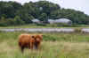
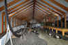
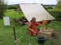
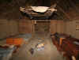
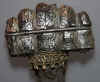
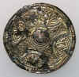
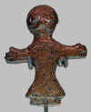
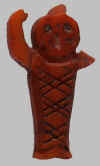
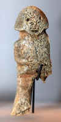
Weiter ging es auf meiner Tour nach zwei Tagen in der Region Haithabu/Danewerk über den Strand von Dyndved nach Sønder Vilstrup, Egtved, Randbøl, Ravning, den Fårup See (dort liegt der Wikingerschiffsnachbau "Jelling Orm" seit dem 5. Juni 1990 vor Anker - Bauzeit 1986 bis 1990 - Segeltouren werden nur ca. 5 x im Jahr über die Sommermonate angeboten) und weiter zum Tagesziel nach Jelling.
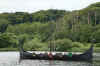
Jelling Orm ankert im Fårup SeeIn Jelling konnte ich dabei erstmals das völlig neugestaltete Museum mit aufwändigen, digitalen, multimedialen Akzenten und mit seiner Dachterasse, die einen bislang nicht gekannten, wirklich tollen Überblick über die Monumente bietet, besichtigen.
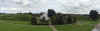
Panoramaaufnahme vom Dach des MuseumsBeim Abendessen im Jelling Kro traf ich auf Svend, einen Mittziebziger, der in der Nähe von Kopenhagen lebt und der mit seinem E-Bike einige Etappen des Heerwegs absolvierte. Es ergab sich bei einem leckeren Abendessen und einem Bierchen vom "Jelling Bryghus" ein sehr nettes Gespräch, so dass wir uns für den nächsten Morgen zum gemeinsamen Museumsbesuch verabredeten. Gegen Mittag war ich auf der Weiterreise und kam über Sønder Vissing, einem Abstecher zum Himmelbjerg nach Sjelle, Sporup (Kirche leider geschlossen) und Hammel zu meinem Tagesziel, dem "Seng og Kaffe B&B" in Thorsøvej 87b, Fårvang, Midtjylland 8882 Dänemark. Auch diese Unterkunft kann ich nur jedem empfehlen! Von dort aus konnte ich bei schönstem Wetter drei Tagestouren in die Region zwischen Viborg, Hobro, Grenå und Aarhus unternehmen und zahlreiche Runensteine besichtigen. Am 25.08.2016 habe ich 20 Runensteine in 15 Orten besucht. Darunter auch Langå. Der Runenstein auf dem Kirchhof wurde im April 2015 restauriert und danach hochkant neu aufgestellt (Neue Bilder/Infos am 04.10.2016 eingestellt). In vier Orten habe ich den Graver (Küster) angerufen/aufgesucht, da die jeweiligen Kirchen verschlossen waren. In allen Fällen kam der Schlüsselträger alsbald vor Ort, um mir den heiß ersehnten Blick auf den jeweiligen Runenstein zu gewähren! Sicherlich keine Selbstverständlichkeit! Der Graver der Øster Alling Kirche machte mich dankenswerterweise bei unserem Gespräch auf ein neues Buch über die Runensteine in Dänemark aufmerksam. Aufgrund der zurückliegenden Internetberichte war mir klar, dass dies von Lisbeth M. Imer (Runologin) und Roberto Fortuna (Fotograf) vom Nationalmuseum Kopenhagen sein musste. Die beiden haben in den letzten Jahren die Runensteine in Dänemark, Südschweden und Norddeutschland aufgesucht, davon wirklich herausragende Fotos gefertigt und in einem Blog fortlaufend darüber berichtet (nicht mehr abrufbar 01/2022). In der Buchhandlung in Hobro konnte ich das Buch schon am nächsten Tag erwerben (Danmarks Runesten. En fortælling. 366 Seiten, 21,5 cm x 27,5 cm, Preis: DKK 349,95 = ca. 47 ).
In der Nähe meiner Unterkunft lag auch die (ehemalige) Schiffssetzung in Vejerslev, zu der ich überhaupt erst während der Tour Informationen im Internet fand. Die Örtlichkeit liegt heute mitten in einem Wald, neben einer großen Lichtung, nicht weit von einem Übergang über den Fluss Gudenå gelegen. Geophysikalische Untersuchungen und weitere Studien finden hier wohl ganz aktuell in 2016 seitens des Moesgaard Museums mit der Universität Arhus statt. Sie ist nach der Schiffssetzung von Jelling, mit ca. 90 m x 14 m, die zweitgrößte Schiffssetzung in ganz Skandinavien! Auch wenn die Steine - wohl bis auf einen, den auch ich vorfand - im Laufe der Zeit entfernt wurden, lassen sich laut einem Strategiebericht des Moesgaard Museums trotzdem wichtige Erkenntnisse vor Ort gewinnen.
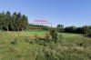
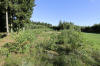
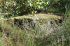
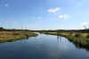
Rechts von der Gudenå liegt die besagte Stelle im Wald in ca. 150 m Entfernung.
In dem nahegelegen Ort Vejerslev findet sich außerdem noch ein 160 cm hoher Runenstein in einer Nische an der äußeren Südwand der Kirche. Dieser wird aber als mittelalterliche Grabplatte angesehen, die 1769 in der Einfriedungsmauer des Kirchhofs entdeckt wurde. Weitere Infos/Fotos zu diesem Stein füge ich deshalb nur am Ende der Seite zu der Schiffssetzung bei, da es sich wie erklärt nicht um einen wikingerzeitlichen Runenstein handelt.
Mit Ausnahme der westlichen Hälfte von Jütland habe ich diesmal nahezu alle Objekte besucht. Die Fahrt sollte eigentlich über Samsø nach Seeland weiterführen. Da die Fähre aber an allen Tagen zur gewünschten Zeit fuhr, außer an dem Samstag, an dem ich sie gebraucht hätte, musste ich diese Idee leider beerdigen. Deshalb ging es weiter auf die Insel Fünen mit Besuchen in Ørslev, Glavendrup, Ladby und Rønninge.
Die Schiffssetzung in Glavendrup ist vom 02. bis 10. September 2014 renoviert worden. Es fanden Baumfällarbeiten statt, es wurde aber auch der Grabhügel mit dem Runenstein frisch angelegt. Dazu findet man im Internet den entsprechenden Bericht - siehe näheres hier.
Im Museum in Ladby hatte ich das Glück, die vom 04.06. bis 04.09.2016 präsentierte Sonderausstellung (Übersetzung: Alte und neue Götter - Detektorfunde) besuchen zu können, die wunderschöne Kunstwerke zeigte, die erst in jüngster Zeit durch Hobbyforscher mit ihren Metalldetektoren auf Fünen gefunden wurden. Darunter befand sich der erst am 11. März 2016 durch Dennis Fabricius Holm gefundene goldene Hängeschmuck, die Figur eines Mannes mit ausgestreckten Armen - Christus! Der "Christus von Aunslev" ist der erste vollständig erhaltene Fund in Dänemark vom Typ "Birka-Kruzifix". Benannt nach dem 1879 in Birka, in einem reichen Frauengrab (Grab 660) gefundene und wirklich sehr ähnlich gestalteten Kruzifix. Der nun gefundene Anhänger wiegt nur 13,2 Gramm und ist mit der Öse 4,1 cm hoch. Er besteht aus einer Grundplatte mit feinen Golddrähten mit Granulation verziert. Der Schmuck wird in die erste Hälfte des 9. Jahrhunderts datiert und ist damit sogar deutlich älter als die Christus-Figur auf dem großen Runenstein von Jelling.
Ein weiteres herausragendes Fundstück stellt die erst im Februar 2016 in Hersnap bei Hindsholm gefundene, ca. 1000 Jahre alte und nur 3 cm hohe Fibel dar. Sie stellt einen voll bewaffneten Krieger mit seinem Pferd dar. In der rechten Hand trägt er ein Schwert, ein runder Schild bedeckt sein linkes Bein und er trägt einen Helm mit Nasenschutz. Die Fibel weist auf der Rückseite Spuren der Nadel, bzw. deren Halterung auf und war verzinnt. Damit ähnelte sie Silber.
Außerdem konnte ich in Ladby erstmals die Rekonstruktion des Ladbyschiffes besichtigen. Dieser 1:1 Nachbau, ca. 22 m lang und max. 3 m breit, liegt nun im Kerteminde Fjord vor Anker. Mit dem Nachbau wurde 2011 begonnen und das prächtige Wikingerschiff wurde erst am 14. Mai 2016 zu Wasser gelassen. Aber auch die im Keller des Museums angelegte und inzwischen fertiggestellte Totenschiff-Szene, war bei meinem letzten Besuch in 2009 noch im Aufbau befindlich. Im Museum, das mit neuen Wandbildnissen versehen wurde, wird außerdem noch der in Arbeit befindliche Teppich ausgestellt, der in Anlehnung an den Teppich von Bayeux von ortsansässigen Frauen in langwieriger Arbeit gestickt wird. Er zeigt Szenen vom letzten Kampf, der tödlich endet und der Grablege des Ladby Häuptlings.
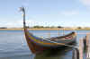
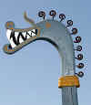
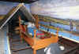
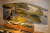
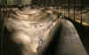
In Bytoften war ich nicht. Im Internet hatte ich auch erst auf der Tour gelesen, dass die 2007 gebaute Landhausrekonstruktion leider am 25.06.2014 abgebrannt ist. Noch ist nicht geklärt ob und wann es zu einem Wiederaufbau kommt. Der Runenstein Neufund aus dem Jahr 2006 von Faaborg, den ich bislang auch nur aus dem Internet kenne (Bericht), wird unverständlicherweise aktuell im Museum "Den gamle Gaard" aufbewahrt. Dort ist ein Besuch allerdings nur im Monat Juli täglich zw. 11.00 Uhr und 15.00 Uhr möglich. Im August 2016 war ein Besuch nur freitags, zwischen 11.00 Uhr und 12.00 Uhr, möglich. Sehr schade - Für mich leider nicht zu schaffen, obwohl ich an einem Freitag auf Fünen war!
Über die Große Belt Brücke, die ich erstmals befuhr, wechselte ich tags darauf auf die Insel Seeland. Dort besuchte ich über mehrere Tage alle relevanten Örtlichkeiten mit Ausnahme von Frederikssund. Die Schiffssetzung von Ferslev war in einem schlechteren Zustand als bei meinem letzten Besuch. Der Bewuchs war sehr hoch, so dass man sie nicht wirklich gut fotografieren konnte. Sehr schade!
Im Schlossgarten von Jægerspris fiel mir eine Verwechselung meiner namentlichen Bezeichnung bei zwei Runenstein auf meiner Webseite auf, die ich nun korrigiert habe.
In Tissø wurde ein kleines, aber feines Museum zum Thema "Königssitz und Kultstätte - Die Wikinger am Tissø" mit einer interaktiven Ausstellung angelegt (Eintritt 40 DKK - ca. 5,40 ). Eine in deutsch verfasste Beschreibung der Ausstellung ist für die Dauer des Aufenthaltes leihweise verfügbar. Ausgestellt ist auch eine 2013 hergestellte Kopie des 1977 in der Nähe gefundenen, ca. 2 kg schweren goldenen Ringes, der einen inneren Duchmesser von 30 cm aufweist. Im Gelände wurden gegenüber meinem letzten Besuch nun auch von mehreren ergrabenen Gebäuden die Grundrisse mit Steinen nachgezeichnet. Bislang war dies nur bei der großen Halle der Fall gewesen.
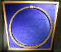
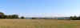
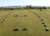
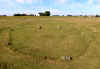
In Gamle Lejre wurde ebenfalls ein Museum neueröffnet (Eintritt 45 DKK - ca. 6,05 ). Darin wird u.a. neben zahlreichen Detektorfunden aus der Umgebung auch der "Lejre-Odin" gezeigt. In relativer Nachbarschaft zum Museum (hinter dem Mysselhøjgård) finden sich inzwischen die Umrisse von vier großen Hallengebäuden, die nach den letzten Ausgrabungen 2009 im Gelände markiert wurden.
Mein persönliches Highlight während der Tour darf natürlich nicht fehlen! Auf der Insel Seeland wurde im Jahr 2014 durch die Archäologen Søren Sindbæk und Nanna Holm die bisher versteckte Wikingerburg Borgring auf einem Feld außerhalb des Dorfes Lellinge, in der Nähe von Køge entdeckt. Die beiden Archäologen vermuteten bereits vor der Entdeckung der Burg, dass auf Seeland noch eine weitere Ringburg des Trelleborg-Typs liegen musste. Mit LIDAR-Fotos der Landschaft und Gradiometer-Messungen konnten sie einen perfekten Kreis mit 100 Metern Durchmesser ausmachen, der sich von der Landschaft erhob. Nach der Testgrabung wurde ihre Vermutung bestätigt: Es handelte sich hierbei um eine Wikingerfestung in Form einer Ringburg, wie die bereits bekannten dänischen Ringburgen in Fyrkat, Aggersborg, Nonnebakken und Trelleborg!
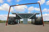
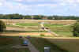
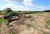
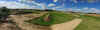
Das Projekt soll nicht nur wichtige Teile von Borgring zutage bringen, sondern gleichzeitig auch einem interessierten Publikum Informationen zur Ausgrabung, den Funden und der Wikingerzeit vermitteln. Aus diesen Überlegungen wurde das Projekt "Vikingeborgen" (Link zur Homepage, auch in deutscher Sprache) ins Leben gerufen. Die Entwicklungsabteilung von Museum Südostdänemark entwickelte anschließend das Konzept und die Gestaltung. Mit dem Eintrittspreis (40 DKK - ca. 5,40 ) erhält man eine kleine klappbare 3-D-Brille (kostet über diesen Link im Internet schon alleine 14,99 !). Diese wird über das Smartphone gesteckt und mit der kostenlosen App "Vikingeborgen" genutzt (in DK/GB/D). Diese lädt man sich am besten vorab per WLAN auf sein Handy (für iPhone und Android). Darüber sind dann mehrere Filme in 3D abrufbar. Die App erhält auch zahlreiche sonstige Informationen zur Thematik. Die gesamte Aufmachung in einer nie dagewesenen Präsentationsform war ein ganz besonderes Erlebnis! Das Objekt kann während der laufenden Ausgrabungen, die bis einschließlich 2018 stattfinden sollen, immer vom 01.06. bis 31.08. besucht werden.
Natürlich ist das Wikingerschiffsmuseum in Roskilde ein weiteres absolutes Muss auf Seeland. Aktuell war neben der Dauerpräsentation der 1962 geborgenen fünf Wikingerschiffe aus dem Roskildefjord bei Skuldelev eine Sonderausstellung "Im Gefolge der Wikinger" zu sehen. Im Kino kann man auch in deutscher Sprache einen Film anschauen. Im Museumshafen lagen zahlreiche Nachbauten, so auch das Kriegsschiff "Seehengst von Glendalough" und das Handelsschiff "Ottar", die betreten werden durften.
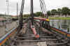
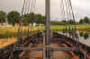
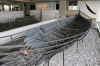
Natürlich bestattet man in Roskilde auch dem Dom, eine Weltkulturerbestätte der UNESCO, der Grablege der dänischen Könige seit Harald Blauzahn einen Besuch ab. Es wird vermutet, dass an der Stelle, wo heute der Dom steht, die erste Holzkirche im Auftrag Harald Blauzahns errichtet wurde. Ein Wandgemälde an einem gen Norden liegenden Mauerpfeiler des Hochchores im Dom zeigt Harald Blauzahn, wie man ihn sich zu Ende des 16. Jahrhunderts, als die Malerei entstand, vorstellte. Sein Grab findet sich dort allerdings nicht, es ist unbekannt.
Die beiden Runensteine, die vormals im Hof des Lolland Falster Stift-Museums in Maribo ausgestellt waren, sind ja bereits im Spätjahr 2014 aus konservatorischen Gründen ins Museum verbracht worden. Diese konnte ich leider nicht besichtigen, da das Museum nur noch von Donnerstag bis Samstag, jeweils von 11 bis 16 Uhr, geöffnet ist. Knapp verfehlt - sehr schade!
Fotos der beiden Runensteine an ihrem neuen Standort finden sich hier.
Neu aufgenommen habe ich auch den Runenstein von Tillitse. Nach meinen Erkenntnissen wurde er früher dem Mittelalter zugerechnet. Nun findet man hier die Auffassung, dass er in die Übergangszeit von der Wikingerzeit zum Mittelalter eingeordnet wird. Es ist der einzige dänische Runenstein, auf dem auf mehreren Seiten zwei separate Inschriften angebracht wurden. Daneben wurde auch noch ein großes Prozessionskreuz in den Stein eingeritzt.


Danach war schon wieder alles vorbei und es ging mit der Fähre über den Fehmarnsund in Richtung Heimat.
Bei nächster Gelegenheit werde ich für alle neu aufgenommenen Objekte eigene Seiten anlegen, bzw. die neuen Infos/Bilder einpflegen. Dies konnte ich bereits erledigen für:
Vallø Borgring / Ådum / Hanning / Vejerslev / Ydby/Flarup / Dyndved / Klejtrup / Langå / Ørslev / Bjerring / Tissø / Egtved /
Randbol / Ravning / Sønder Vissing / Sjelle / Sporup / Hammel / Hjermind / Skjern / Ålum / Sønder Vinge / Ulstrup / Langå /
Laurbjerg / Virring / Øster Alling / Rimsø / Kolind / Sønder Vilstrup / Glavendrup / Rønninge / Maribo / Tågerup / Tillitse / Risby
Hedehusene / Jægerspris / Fjenneslev / Alsted / Sandby.
Dann fehlen mir aktuell noch Ladby, Ferslev Schiffssetzung, Lejre und Roskilde, das müssten dann aber für die 2016er Tour alle gewesen sein.
13.08.2016
Längst überfällig, aber immer wieder hinausgeschoben. Die Rubrik "Reiseroute" enthält nun eine Übersicht der einzelnen Objekte mit Anschrift und GPS Daten zur einfachen Navigation.
Wenn ich bedenke, dass ich bei meinem ersten Besuch auf Hjarnø keine Ahnung und keine Hilfsmittel zur Verfügung hatte, um die Lage der Schiffssetzungen herauszufinden, weil noch kein Internet und keine Smartphones existierten! Also entschied ich mich damals in den 1980er Jahren nach der Fährankunft links herum zu laufen. Natürlich liegen sie nach kurzer Wegstrecke rechts! Aber gefunden habe ich sie, das war die Hauptsache!
Außerdem habe ich auf der Reiserouteseite das Bildchen zur 2016er Straßenkarte eingefügt und einige redaktionelle Veränderungen vorgenommen. Die Straßenkarte benutze ich z.B. immer noch sehr gerne, trotz Navi, iPhone usw., einfach um mal nachzuschauen und einen besseren Überblick zu bekommen.
21.06.2015
Am 05.06.2015 hatte ich auch mal wieder Zeit mich ausgiebig in Bork Vikingehavn umzuschauen. Die Anlage ist inzwischen ganz schön gewachsen und seit meinem letzten Besuch, der viele Jahr zurück liegt, um etliche Gebäude erweitert worden. Eine Fotoübersicht dazu findet sich hier.
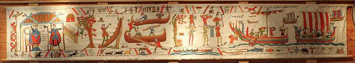